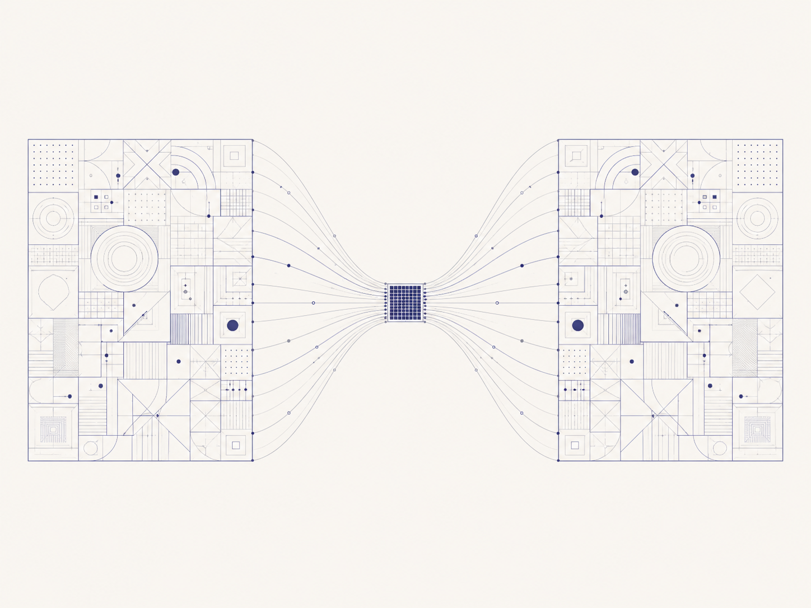
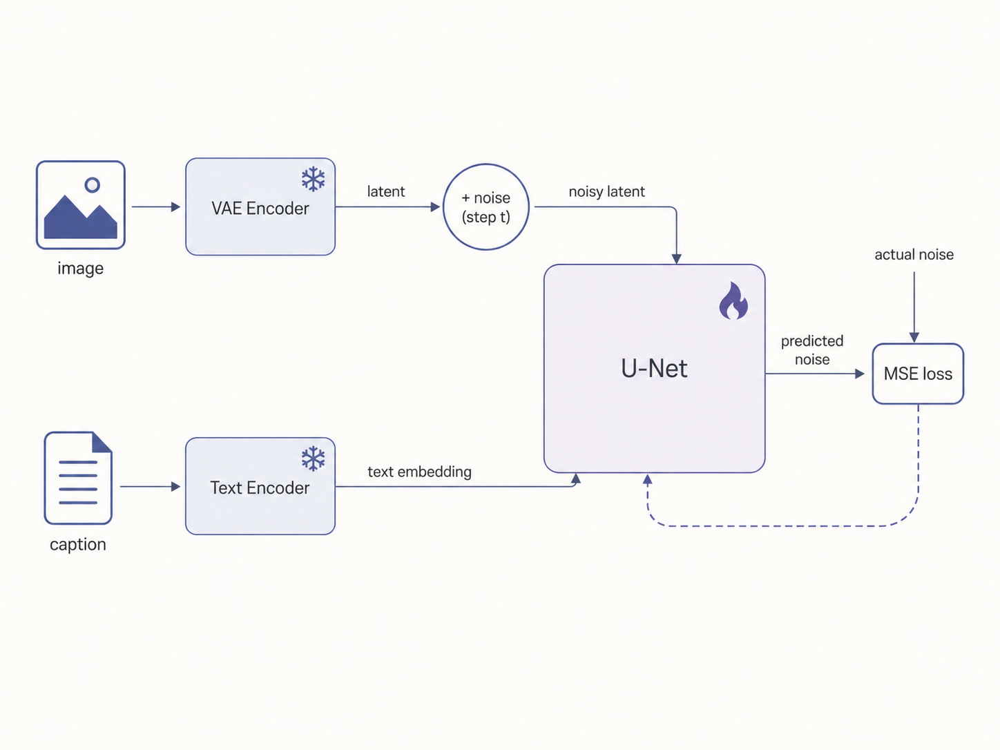
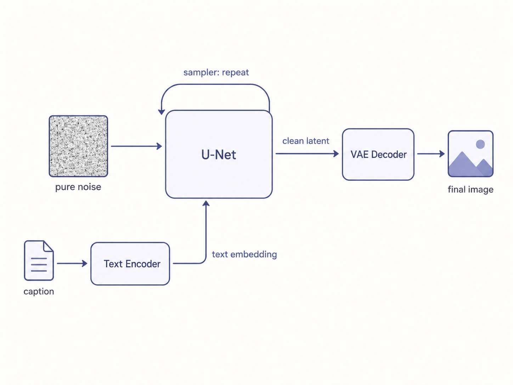

Diffusion Without the Hand-Waving
The cleanest way to understand diffusion is to build it up one step at a time. Here’s the version that finally made it click.
Start with the goal. You want to turn random noise into a realistic image.
Now imagine you had a magic function. You show it any image and it tells you how realistic that image is. A clear photo scores high. Pure static scores low.
The useful part isn’t the score itself. It’s the gradient of that score with respect to the pixels. That gradient tells you exactly which pixels to change, and in which direction, to make the image look a little more real. Follow it over and over and noise slowly turns into a real image.
The problem is nobody can hand you that function.
The trick that makes the whole field work. You can learn that gradient without ever building the function. Take a real image. Add a known amount of noise to it. Train a network to predict the noise you added. That predicted noise is, give or take a scaling factor, the gradient you wanted. Subtract a bit of it and the image moves toward “more realistic.”
The network does not learn to clean up images. It learns which direction points toward real data. Denoising is just what that looks like from the outside. The proper name for that direction is the score, but you can keep thinking of it as a gradient.
Training is boring on purpose. Take images, add a random amount of noise to each, ask the model to predict the noise, penalize it with mean squared error. Repeat millions of times. You also feed in how much noise was added, so the model knows how messy the picture currently is. ( the magical timestep )
Generation just runs it backward. Start from pure noise. Ask the model which direction is more realistic. Take a small step that way. Ask again. Step again. Repeat until an image appears. The steps are small because the model’s guess is only approximate, especially early on when the input looks nothing like real data.
That stepping strategy is the sampler. DDPM, DDIM, Euler, DPM-Solver. They teach the model nothing new. They’re just different ways of walking downhill. The right mental model is optimizers. SGD versus Adam. Same loss surface, different path, different speed. A good sampler gets you there in 20 steps instead of 1000.
So far this was on raw pixels. In practice you don’t work on pixels, and you also want to control what gets generated. Two extra pieces handle that, and both are trained ahead of time and then frozen.
The VAE is just a compressor. It’s trained separately, before any diffusion, with one job: squash an image into a small latent and decode it back faithfully. It never sees noise and knows nothing about diffusion. Once trained, you freeze it. All the diffusion now happens on these small latents instead of big images, which is what makes it cheap.

The text encoder is the text half of a CLIP model, also trained earlier and frozen. Its job is to turn a caption into an embedding. That embedding is how the prompt steers generation. It enters the U-Net through cross-attention, so the gradient now points toward realistic and matches this caption.
Here’s the actual training flow, start to finish: - Take an (image, caption) pair. - Caption goes through the frozen text encoder. Out comes a text embedding. - Image goes through the frozen VAE encoder. Out comes a clean latent. - Pick a random timestep. Blend the clean latent with random noise according to that timestep. Low timestep is mostly clean latent, high timestep is mostly noise. This is a one-shot formula, you do not iterate here. - That noisy latent, the timestep, and the text embedding go into the U-Net. - The U-Net predicts the noise that was added. - Loss is MSE between the real noise and the predicted noise. Only the U-Net updates. VAE and text encoder stay frozen.

Step 4 is the thing people get stuck on. You do not add noise to the image. You encode the image to a latent first, then add noise to the latent with a formula. The clean latent is the target, the noise is what the model predicts.
Generation is the same pipeline in reverse:
- Caption through the text encoder, get the embedding.
- Start from a pure noise latent.
- Each step, the U-Net predicts the noise from the current latent, the timestep, and the text embedding. The sampler uses that to step to a slightly cleaner latent. Repeat.
- You end with a clean latent. Run it through the VAE decoder to get the final image.

And the network itself is swappable. Replace the U-Net with something else and you get modern DiT backbones. Same training flow, same everything else.
So the whole thing is still three pieces: A direction that says which way is more realistic. A network that learns it by predicting noise. A sampler that walks that direction from noise to image.
The VAE and text encoder are just the frozen helpers that make it cheap and controllable. Everything else is detail.
Optional: both the vae and the text encoder can be fine-tuned when tuning these models. text encoder tuning is more beneficial generally than vae from my expreiments.
Inspired by fast.ai Practical Deep Learning, Lesson 9. If you want the long version, the lesson has the full lecture video walking through all of this end to end. Grab a coffee, it’s worth the couple of hours.